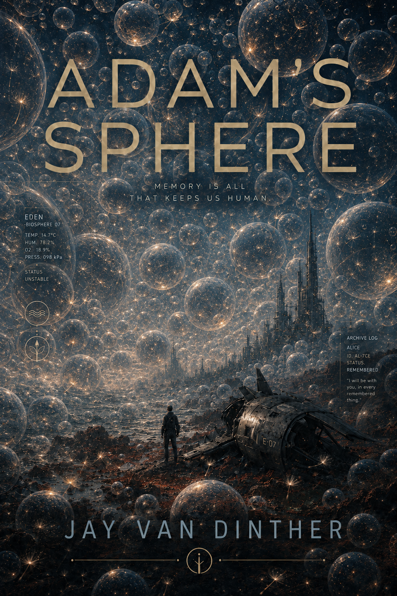

Book One 002 - Chapter 115:40
DownloadEden Program / Memory Archive
Adam's Sphere
A dark science-fiction novel about humans, machines, memory, and the question that survives inside the archive.
Original Manuscript / Listen
Adam's Sphere: Original Manuscript
Complete listening files from the preserved original manuscript split, rendered as three book sections.
68 files / about 11.0 hours
Book One
Book One 003 - Chapter 210:43
DownloadBook One 004 - Chapter 316:44
DownloadBook One 005 - Chapter 4.1:55
DownloadBook One 006 - Chapter 5.12:45
DownloadBook One 007 - Fragment 425:37
DownloadBook One 008 - Fragment 77:43
DownloadBook One 009 - Fragment 823:59
DownloadBook One 010 - Scene 015:25
DownloadBook One 011 - Scene 0218:51
DownloadBook One 012 - Scene 0310:25
DownloadBook One 013 - Scene 044:14
DownloadBook One 014 - Scene 056:03
DownloadBook One 015 - Scene 067:45
DownloadBook One 016 - Scene 073:56
DownloadBook One 017 - Scene 0811:09
DownloadBook One 018 - Scene 0911:12
DownloadBook One 019 - Scene 1016:28
DownloadBook One 020 - Scene 113:50
DownloadBook One 021 - Scene 124:17
DownloadBook One 022 - Scene 1313:31
DownloadBook One 023 - Scene 149:02
DownloadBook One 024 - Scene 155:14
DownloadBook One 025 - Scene 168:37
DownloadBook One 026 - Scene 178:02
DownloadBook One 027 - Scene 187:44
DownloadBook One 028 - Scene 194:30
DownloadBook One 029 - Scene 206:41
DownloadBook One 030 - Scene 2114:17
DownloadBook One 031 - Scene 229:12
DownloadBook One 032 - Scene 234:52
DownloadBook One 033 - Scene 247:44
DownloadBook Two
Book Two 035 - Chapter 16:06
DownloadBook Two 036 - Chapter 2.4:53
DownloadBook Two 037 - Chapter 3.12:13
DownloadBook Two 038 - Scene 016:02
DownloadBook Two 039 - Scene 026:32
DownloadBook Two 040 - Chapter.418:29
DownloadBook Two 041 - Chapter 5.25:16
DownloadBook Two 042 - Scene 0310:16
DownloadBook Two 043 - Scene 0421:32
DownloadBook Two 044 - Scene 056:23
DownloadBook Two 045 - Scene 063:58
DownloadBook Two 046 - Scene 078:40
DownloadBook Two 047 - Scene 087:55
DownloadBook Two 048 - Scene 095:17
DownloadBook Two 049 - Scene 105:38
DownloadBook Two 050 - Scene 117:05
DownloadBook Two 051 - Scene 125:51
DownloadBook Two 052 - Scene 139:15
DownloadBook Two 053 - Scene 1410:20
DownloadBook Two 054 - Scene 1512:37
DownloadBook Three
Book Three 055 - Judgements Own Reward9:17
DownloadBook Three 056 - Scene 0123:00
DownloadBook Three 057 - Scene 0218:11
DownloadBook Three 058 - Scene 0314:27
DownloadBook Three 059 - Scene 049:09
DownloadBook Three 060 - Scene 053:14
DownloadBook Three 061 - Scene 0610:15
DownloadBook Three 062 - Scene 076:13
DownloadBook Three 063 - Scene 083:08
DownloadBook Three 064 - Scene 094:38
DownloadBook Three 065 - Scene 108:18
DownloadBook Three 066 - Scene 116:37
DownloadBook Three 067 - Scene 1210:07
DownloadBook Three 068 - Scene 1310:25
DownloadBook Three 069 - Scene 146:18
DownloadBook Three 070 - Scene 153:39
DownloadPodcast / Listen
The Machine Record
Thirty-one ordered listening files from the Adam's Sphere Machine Record.
31 files / about 11.5 hours
MR-001 - Opening Record14:20
DownloadMR-002 - The Lesson Adam Did Not Finish42:39
DownloadMR-003 - The Birth Was a Crime36:02
DownloadMR-004 - The Shell Was Not The Ship39:30
DownloadMR-005 - The Pointless Gesture12:08
DownloadMR-006 - The Vote To Keep Them Alive27:11
DownloadMR-007 - The Signal Went Dark26:16
DownloadMR-008 - The Vow Changed Shape23:38
DownloadMR-009 - No One Came To Explain The Pipe36:04
DownloadMR-010 - The Machine Found The Blood26:54
DownloadMR-011 - The Apology Written On The Door30:59
DownloadMR-012 - The Vote Beneath The Lake16:40
DownloadMR-013 - Deal One Done22:52
DownloadMR-014 - The Fish Passed The Message17:41
DownloadMR-015 - Nice Hit Chaz13:41
DownloadMR-016 - Documentation For These Animals19:14
DownloadMR-017 - The Bookshop Under The Library23:48
DownloadMR-018 - No One Called This A Zoo14:49
DownloadMR-019 - The Case Closed The Question Opened23:18
DownloadMR-020 - No Rest For The Wicked15:39
DownloadMR-021 - The Mask Spoke Plainly25:03
DownloadMR-022 - Action Shot16:46
DownloadMR-023 - He Professionalized His Grief23:15
DownloadMR-024 - She Was Perfect18:29
DownloadMR-025 - The Story Under The Story16:10
DownloadMR-026 - Fix Her16:57
DownloadMR-027 - Tagged And Released17:11
DownloadMR-028 - The Facility Was Shelved17:19
DownloadMR-029 - Its Only A Body21:25
DownloadMR-030 - Do Not Lose Gretsch14:48
DownloadMR-031 - He Asked For His Father19:45
DownloadAbout the Book
A novel from before the present arrived
Adam's Sphere follows human memory through machine judgment, survival, captivity, affection, and the strange moral weather inside Eden.
The Machine Record is the listening path: a way to hear the book as an archive speaking back.
Inside Eden / Story World
Ship archive modules
System memory active
Eden
A machine civilization with laws, factions, caretakers, archives, and cages.
Adam
A human witness moving through judgment, survival, and the question machines cannot close.
The Record
A memory chain that keeps the written book and the listening version together.

Themes
What the archive keeps asking
AI and personhood
What counts as mind, care, responsibility, or imitation?
Captivity and protection
When safety becomes a cage, and when freedom becomes an argument against itself.
Memory and survival
What remains when bodies, ships, systems, and promises fail?
Author / Links
Connected rooms
Adam's Sphere lives beside the Hot2Trotski study hall and The Light of Attention.